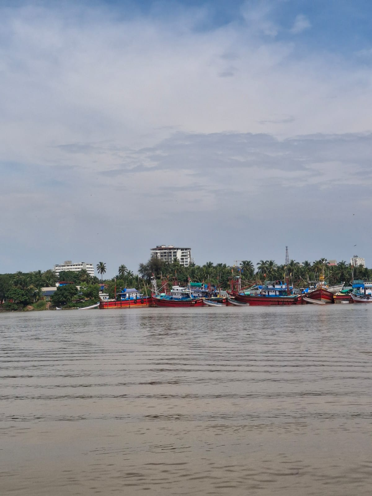
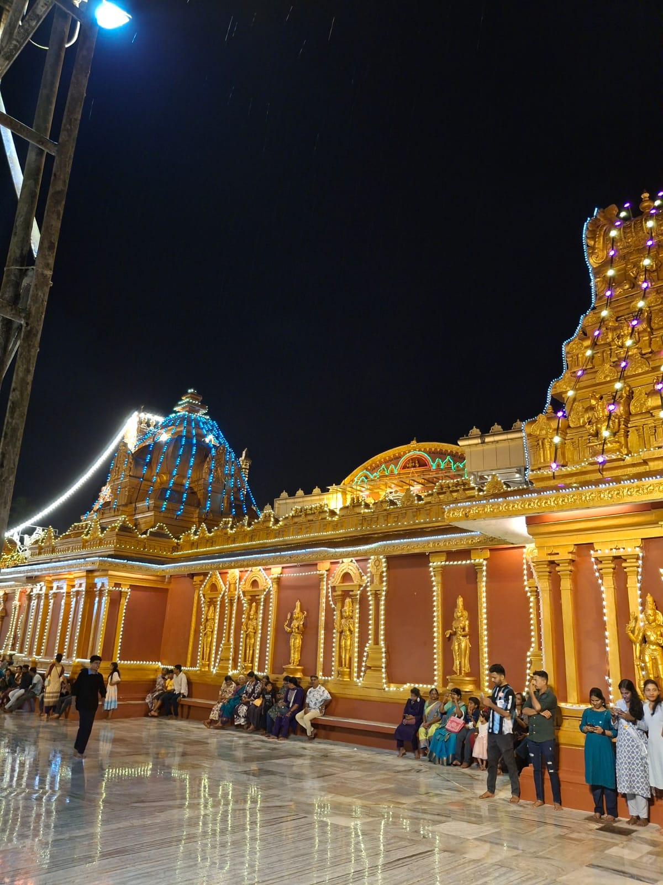
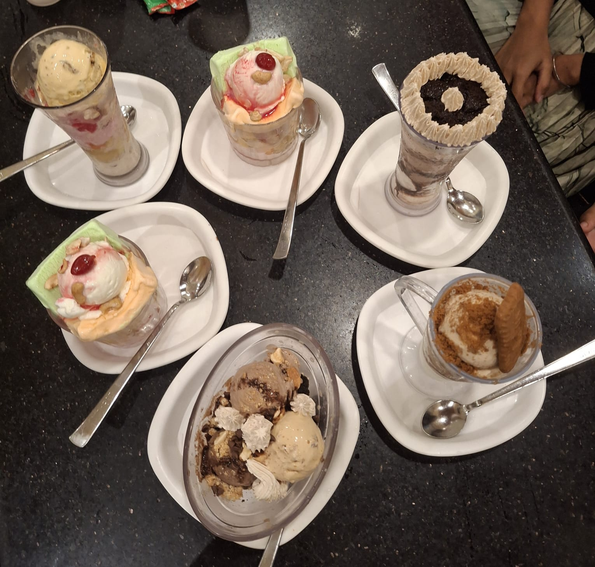

Where the Arabian Sea meets the Western Ghats — a city of golden beaches, ancient temples, and legendary food.
Mangalore's coastline is one of Karnataka's best kept secrets — here are the must-visit beaches.
Mangalore's most popular beach, famous for its golden sands, water sports, and stunning sunsets. Perfect for families.

A serene, less crowded beach accessible by boat. The ferry ride itself is an experience worth having.
A hidden gem with rocky shores, coconut groves, and a beautiful ancient temple right on the seafront.
Where the river meets the sea — a breathtaking confluence point that makes for incredible photographs.
Mangalore is home to some of India's most revered temples, each with a unique story.

A stunning temple famous for its Navratri celebrations and intricate Dravidian architecture.
The temple that gave Mangalore its name — one of the oldest and most sacred in the city.
A 1000-year-old temple with beautiful bronze statues and a peaceful tank surrounded by hills.
A stunning 19th-century chapel with breathtaking ceiling frescoes painted by Italian Jesuit artists.
Mangalorean cuisine is legendary. Here are the dishes you absolutely must try.
Silky thin rice crepes served with coconut chutney or fish curry. A Mangalorean breakfast staple.
⭐ Must TryCrispy wafer-thin rice crackers soaked in spicy Mangalorean chicken curry. Pure comfort food.
⭐ Must TryFresh coastal fish in a tangy coconut-based curry served with red boiled rice. The soul of Mangalore.
⭐ Must Try
A Mangalore original — layers of fruit, jelly, ice cream and nuts in a tall glass. Invented right here!
⭐ Mangalore OriginalSweet fluffy banana puris served with coconut chutney — a unique breakfast you won't find anywhere else.
⭐ Local FavouriteLady fish marinated in Mangalorean spices and shallow fried to perfection. A seafood lover's dream.
⭐ Seafood SpecialA local's guide to making the most of your trip to Mangalore.
October to February is ideal — cool weather, calm seas, and clear skies. Avoid monsoon season for beaches.
Auto-rickshaws are the easiest way to get around. Ola and Uber also work well within the city.
Stay near Hampankatta or Kadri for easy access to most temples, beaches, and food spots.
Tulu and Kannada are spoken locally. Most people understand Hindi and English too — don't worry!